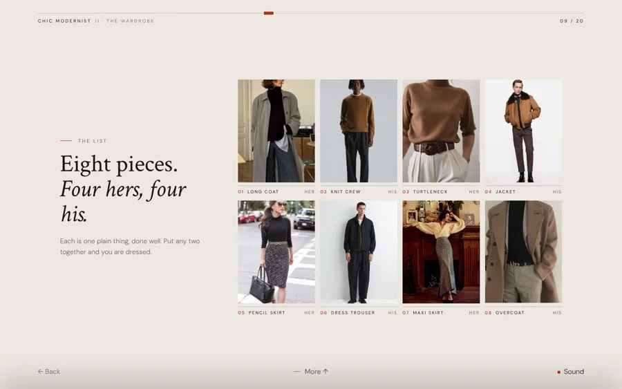
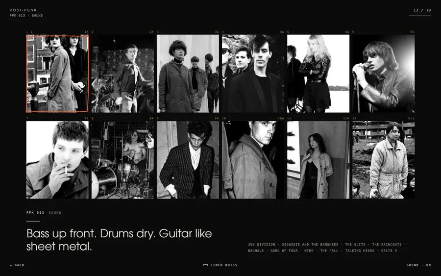
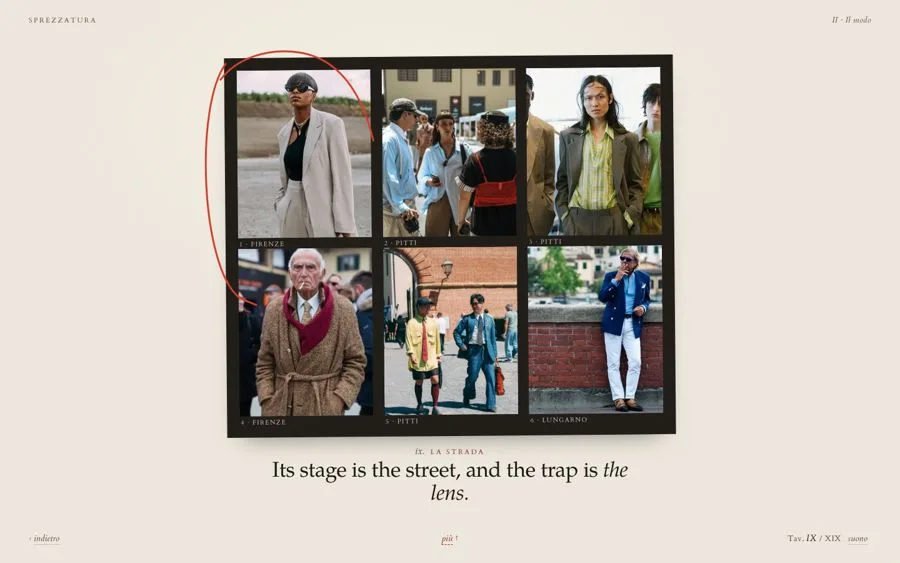
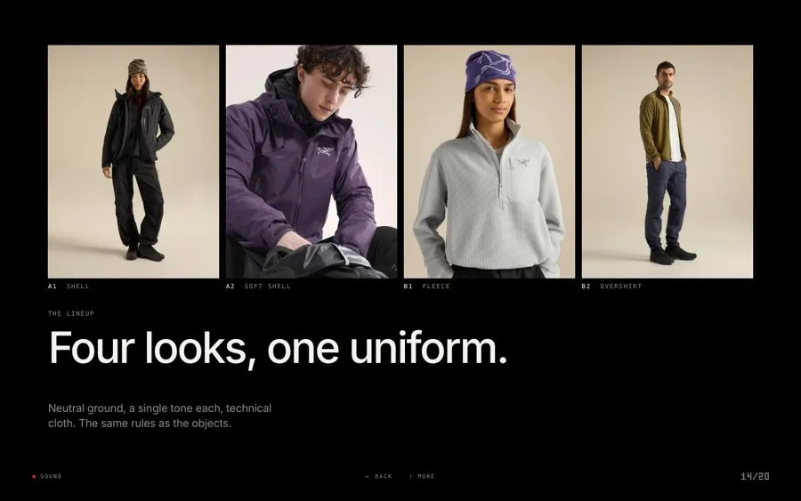
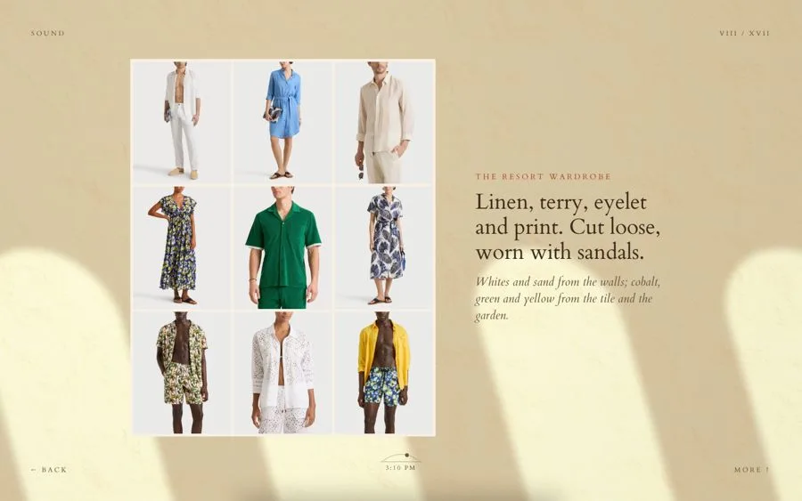
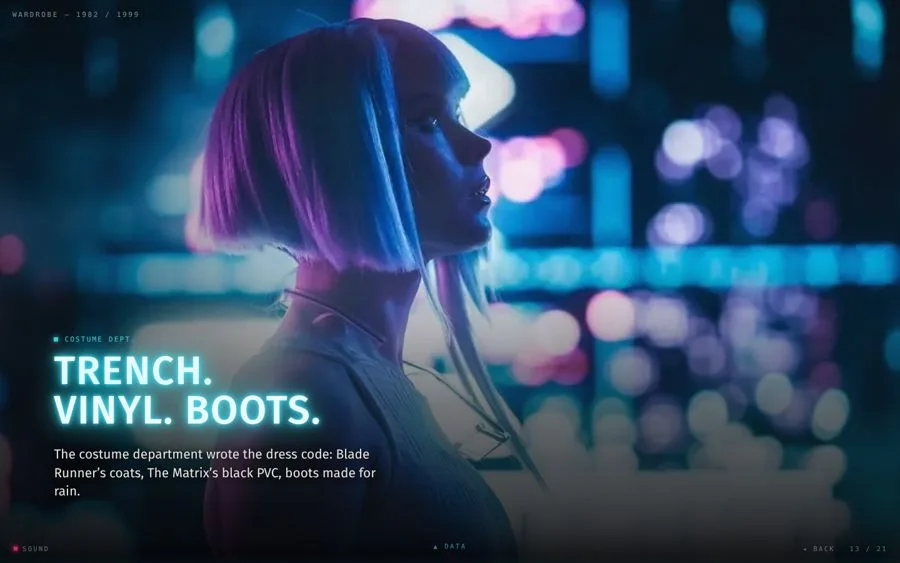

Chic ModernistA glass house and a wardrobe, and a spec sheet to keep.
Post-PunkA cold catalogue: sleeves, the scene, liner notes.
SprezzaturaA tailor’s book of plates on the art that hides its art.
CyberminimalismA silent launch keynote, from Braun to the stage.
Mediterranean RevivalOne day on a 1920s stucco wall, dawn to the casino.
CyberpunkThe city through its own screens, rain underneath.